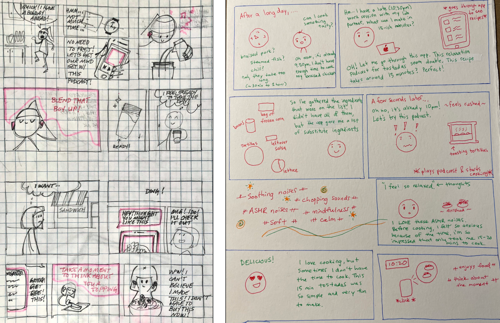

Interviews
We conducted eight in-depth interviews and collected the three cultural probes with our target sample audience of college students, then visualized the data on personal cardsets. Below is an example of a personal cardset.

We celebrate mistakes, discourage perfection, and relish in the richness of the present moment. Take the fear out of cooking and let us guide you along the journey.
- Mindful Mealtime Media
We kicked off our primary research by narrowing down the problem space that we wanted to explore and defining our goals for primary research. We each brainstormed ideas for questions to ask to our sample audience to learn more about their cooking process, cooking support, eating experiences, meal inspiration, ideal meal experience, grocery shopping experience, priorities in a meal experience, and pain points/barriers to enjoyable meal preparation.
Focus: We want to make the meal preparation experience easier for young individuals just starting to fend for themselves.
Actors: 18-24 year olds with limited cooking experience
Action: Preparing meals - includes finding meal inspiration, grocery shopping, planning, cooking, nourishing your body
Context: Being new to cooking, little experience, first time having to cook for themselves
We understood that cooking is a very personal and emotional experience, intrinsically tied to a person's background, taste, skill-level, energy-level, or daily mood. In order to truly understand students' experiences, we thought it best to capture a snapshot into their lives by conducting interesting visual cultural probes. To determine which cultural probes would be the most impactful for gathering the type of data we wanted, we decided to test our methods on ourselves first.
Description: Photo journal your meal prep experience for the week by taking candid photos of the food you eat, reflecting on the process, and your emotions surrounding your meals.

Draw the following three meal preparation scenarios:
What do you feel, think, and do in these three scenarios?

Write a love and breakup letter to two different aspects of your meal preparation lifestyle.
For instance, you can choose to serenade your favorite dish or say goodbye to an old habit.

We conducted eight in-depth interviews and collected the three cultural probes with our target sample audience of college students, then visualized the data on personal cardsets. Below is an example of a personal cardset.
Using our main takeaways as guidance, each member of the team brainstormed one persona that represents the current experience, painpoints, goals, and wants of our audience. Then as a team, we synthesized all our individual personas and condensed them into two personas that represented the three main problems our audience experiences:

Based on these our persona, Luke, we created a journey map to that reflects his motivations and painpoints, measured emotions through color and timeline.

Using our personas, journey maps and user stories representing main pain points and wants as inspiration, we developed our design requirements to represent what criteria our design must meet in order to be useful for the audience.
At this point, we had identified experiential goals and metrics, and had gathered enough information to understand our target audiences, we began to generate ideas through ideation and develop our design concept. We decided on our final idea by thinking about which solution solved the most user needs and fit the most design requirements. We decided on a Cooking Buddy Competition App.

We created storyboards to visualize how the users would interact with our product.


Our storyboard follows the journey of Luke, a college student that lives with his two roommates. Luke's roommates often cook food for him, which is his motivation to learn how to cook. While scrolling through his phone, he finds an app that has a cooking community, resouces, and recipes for various dishes. Luke gives it a try and makes his first dish for his roommates. A few days later, Luke gets a notification to participate in a weekly cooking challenge. He decides to ask his roommates to join this weekly cooking challenge and in the end, they all have fun learning a new dish and enjoying their food.
We had some helpful and interesting takeaways after our trial:

At this point, we presented our design proposal to the class. We took feedback from critique of our design proposal. We realized that this concept was not the correct solution. Building functional skills did not improve the cooking experience as much as we had hoped. Thus, we pivoted our ideas and changed our design goal to building and improving confidence in our audiences.
The main problem:
Students' confidence in their cooking, not inspiration for cooking. For example, not knowing what to do, lack of confidence in skills and abilities, feeling intimidated by the time and skills required to cook
We refined our problem statement:
Cooking is one of many overwhelming responsibilities college students face and it adds to their stress. In the midst of stress, students are seeking a time to relax and reflect.
College students often feel constrained and stressed with unpredictable schedules. Even meeting necessary everyday needs such as getting meals becomes overwhelming or mundane. In face of that stress, we believe that cooking could become a new source of relaxation.
Design Hypothesis:
If we transform cooking into a mindful and enjoyable experience instead of it being a mundane responsibility, then cooking can become a mental therapy tool to destress college students.
Our new goal for the project was to make cooking into a comforting and relaxing experience in the face of stressful student life. We also wanted to keep in mind that we wanted cooking to be supported and people can be playful with it.
We developed a prototype of a six-minute relaxing, mindfulness cooking podcast and potential Spotify interface visuals for our podcast. Then, our team recruited a total of 5 students (3 NEU / 2 non-NEU) to listen and answer some questions about our podcast to gather some feedback on if this design concept was successful in relaxing students.

In Week 12, we created low-fidelity wireframes for primary interfaces and produced sample content to emulate the intended experience. To complement our prototypes, we produced storyboards to illustrate our service in action.
We drafted a preliminary prototype to further gauge the user's opinions and experiences. In particular, the testing comprised of:
Following testing feedback:


Mindful Mealtime Media: a multi-channel distribution podcast